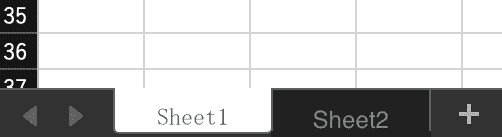
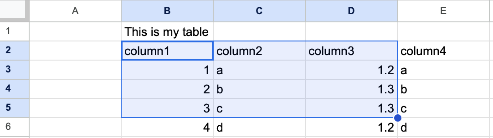

Excel
ROAPI supports loading Microsoft Excel compatible formats including xls, xlsx, xlsb, and ods files.
tables:
- name: "mytable"
uri: "path/to/file.xlsx"
option:
format: "xlsx"
sheet_name: "Sheet1"
Supported Formats
- xls - Microsoft Excel 5.0/95 Workbook
- xlsx - Excel Workbook
- xlsb - Excel Binary Workbook
- ods - OpenDocument Spreadsheet
Sheet Selection
You can specify which sheet to load from the spreadsheet using the sheet_name option. By default, ROAPI will use the first sheet if no sheet name is specified.

tables:
- name: "mytable"
uri: "path/to/file.xlsx"
option:
format: "xlsx"
sheet_name: "MyDataSheet"
Table Range Options
You can specify a specific range of cells to load from the spreadsheet: You can specify a specific range of cells to load from the spreadsheet:
- rows_range_start - The first row of the table containing column names (default: 0)
- rows_range_end - The last row of the table (default: all rows)
- columns_range_start - The first column of the table (default: 0)
- columns_range_end - The last column of the table (default: all columns)

tables:
- name: "mytable"
uri: "path/to/file.xlsx"
option:
format: "xlsx"
sheet_name: "Sheet1"
rows_range_start: 1
rows_range_end: 4
columns_range_start: 1
columns_range_end: 3
Schema Inference
ROAPI can automatically infer the schema from your Excel data. The first row within the specified range is treated as column names, and ROAPI will analyze the remaining rows to determine data types.
You can control schema inference with the schema_inference_lines option, which specifies how many rows to analyze (including the header row). For example, schema_inference_lines: 3 will use the first row for column names and analyze 2 additional rows for data types.
If a column contains mixed data types (like both integers and floats), ROAPI will default to the Utf8 (string) data type.
Explicit Schema Definition
For better performance and predictable data types, you can define the schema explicitly in your configuration:
tables:
- name: "excel_table"
uri: "path/to/file.xlsx"
option:
format: "xlsx"
schema:
columns:
- name: "int_column"
data_type: "Int64"
nullable: true
- name: "string_column"
data_type: "Utf8"
nullable: true
- name: "float_column"
data_type: "Float64"
nullable: true
- name: "datetime_column"
data_type: !Timestamp [Seconds, null]
nullable: true
- name: "duration_column"
data_type: !Duration Second
nullable: true
- name: "date32_column"
data_type: Date32
nullable: true
- name: "date64_column"
data_type: Date64
nullable: true
- name: "null_column"
data_type: Null
nullable: true